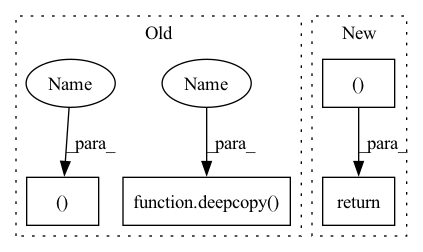

Pattern ID :23909
Before Change
input_constraint, this_info = self.get_one_step_backprojection_set(
output_constraint, input_constraint, num_partitions=num_partitions, overapprox=overapprox, collected_input_constraints=[output_constraint]+input_constraints, refined=refined
)
input_constraints.append(deepcopy(input_constraint ) )
info = {"per_timestep": []}
info["per_timestep"].append(this_info)
if overapprox:
for i in np.arange(0 + self.dynamics.dt + 1e-10, t_max, self.dynamics.dt):
next_output_constraint = over_approximate_constraint(deepcopy(input_constraint))
next_input_constraint = deepcopy(next_output_constraint)
input_constraint , this_info = self.get_one_step_backprojection_set(
next_output_constraint, next_input_constraint, num_partitions=num_partitions, overapprox=overapprox, collected_input_constraints=[output_constraint]+input_constraints, infos=info["per_timestep"], refined= refined
)
input_constraints.append(deepcopy(input_constraint))After Change
output_constraint, input_constraint, num_partitions=num_partitions, overapprox=overapprox, collected_input_constraints=[output_constraint]+input_constraints, refined=refined
)
return input_constraint, info
def output_to_constraint(self, bs, output_constraint):
raise NotImplementedError
if isinstance(output_constraint, constraints.PolytopeOutputConstraint):In pattern: SUPERPATTERN
Frequency: 4
Non-data size: 4
Instances Fragment ID: 74419039
Project Name: mit-acl/nn_robustness_analysis
Commit Name: 63e79909e36636ad1ba6c548408a853c1564488d
Time: 2022-06-08
Author: mfe@mit.edu
File Name: nn_closed_loop/nn_closed_loop/propagators/ClosedLoopPropagator.py
M Class Name: ClosedLoopPropagator
N Class Name: ClosedLoopPropagator
M Method Name: get_single_target_backprojection_set(7)
N Method Name: get_single_target_backprojection_set(7)
M Parent Class: propagators.Propagator
N Parent Class: propagators.Propagator
M File Name: nn_closed_loop/nn_closed_loop/propagators/ClosedLoopPropagator.py
N File Name: nn_closed_loop/nn_closed_loop/propagators/ClosedLoopPropagator.py
M Start Line: 88
M End Line: 118
N Start Line: 60
N End Line: 60
Before Change
self, input_constraint, output_constraint, propagator, t_max
):
output_constraint_this_cell, info = propagator.get_reachable_set(
input_constraint, deepcopy( output_constraint) , t_max
)
// TODO: this is repeated from UniformPartitioner...
// might be more efficient to directly return from propagator?
_ = output_constraint.add_cell(output_constraint_this_cell)
return output_constraint, info
def get_error(
self, input_constraint, output_constraint, propagator, t_max
):After Change
reachable_set, info = propagator.get_reachable_set(
initial_set, t_max
)
return reachable_set, info
// // TODO: this is repeated from UniformPartitioner...
// // might be more efficient to directly return from propagator?
// _ = reachable_set.add_cell(reachable_set_this_cell) Fragment ID: 74419022
Project Name: mit-acl/nn_robustness_analysis
Commit Name: ebf174d510aba4f321ef5ec82b9cda211c5bddac
Time: 2022-12-27
Author: mfe@mit.edu
File Name: nn_closed_loop/nn_closed_loop/partitioners/ClosedLoopPartitioner.py
M Class Name: ClosedLoopPartitioner
N Class Name: ClosedLoopPartitioner
M Method Name: get_reachable_set(4)
N Method Name: get_reachable_set(5)
M Parent Class: partitioners.Partitioner
N Parent Class: partitioners.Partitioner
M File Name: nn_closed_loop/nn_closed_loop/partitioners/ClosedLoopPartitioner.py
N File Name: nn_closed_loop/nn_closed_loop/partitioners/ClosedLoopPartitioner.py
M Start Line: 42
M End Line: 52
N Start Line: 47
N End Line: 47
Before Change
def get_backprojection_set(self, output_constraint, input_constraint, t_max, num_partitions=None, overapprox=False):
input_constraints = []
input_constraint, this_info = self.get_one_step_backprojection_set(
output_constraint, input_constraint, num_partitions=num_partitions, overapprox=overapprox
)
input_constraints.append(deepcopy(input_constraint))
info = {"per_timestep": []}
info["per_timestep"].append(this_info)
if overapprox:
for i in np.arange(0 + self.dynamics.dt + 1e-10, t_max, self.dynamics.dt):
next_output_constraint = over_approximate_constraint(deepcopy( input_constraint) )
next_input_constraint = deepcopy(next_output_constraint)
input_constraint, this_info = self.get_one_step_backprojection_set(
next_output_constraint, next_input_constraint, num_partitions=num_partitions, overapprox=overapproxAfter Change
input_constraint_list.append(deepcopy(input_constraints))
tightened_infos_list.append(deepcopy(tightened_infos))
return input_constraint_list, tightened_infos_list
def get_single_target_backprojection_set(self, output_constraint, input_constraint, t_max, num_partitions=None, overapprox=False):
input_constraints = []
Fragment ID: 74419038
Project Name: mit-acl/nn_robustness_analysis
Commit Name: 042a46d2012f8c1862cfedb24d600fbbad1ac007
Time: 2022-03-09
Author: nrober1122@gmail.com
File Name: nn_closed_loop/nn_closed_loop/propagators/ClosedLoopPropagator.py
M Class Name: ClosedLoopPropagator
N Class Name: ClosedLoopPropagator
M Method Name: get_backprojection_set(6)
N Method Name: get_backprojection_set(6)
M Parent Class: propagators.Propagator
N Parent Class: propagators.Propagator
M File Name: nn_closed_loop/nn_closed_loop/propagators/ClosedLoopPropagator.py
N File Name: nn_closed_loop/nn_closed_loop/propagators/ClosedLoopPropagator.py
M Start Line: 38
M End Line: 68
N Start Line: 39
N End Line: 52
Before Change
for i in np.arange(0 + self.dynamics.dt + 1e-10, t_max, self.dynamics.dt):
next_output_constraint = over_approximate_constraint(deepcopy(input_constraint))
next_input_constraint = deepcopy(next_output_constraint)
input_constraint, this_info = self.get_one_step_backprojection_set(
next_output_constraint, next_input_constraint, num_partitions=num_partitions, overapprox=overapprox, collected_input_constraints=[output_constraint]+input_constraints, infos=info["per_timestep"], refined= refined
)
input_constraints.append(deepcopy( input_constraint) )
info["per_timestep"].append(this_info)
else:
for i in np.arange(0 + self.dynamics.dt + 1e-10, t_max, self.dynamics.dt):After Change
output_constraint, input_constraint, num_partitions=num_partitions, overapprox=overapprox, collected_input_constraints=[output_constraint]+input_constraints, refined=refined
)
return input_constraint, info
def output_to_constraint(self, bs, output_constraint):
raise NotImplementedError
if isinstance(output_constraint, constraints.PolytopeOutputConstraint): Fragment ID: 74419037
Project Name: mit-acl/nn_robustness_analysis
Commit Name: 63e79909e36636ad1ba6c548408a853c1564488d
Time: 2022-06-08
Author: mfe@mit.edu
File Name: nn_closed_loop/nn_closed_loop/propagators/ClosedLoopPropagator.py
M Class Name: ClosedLoopPropagator
N Class Name: ClosedLoopPropagator
M Method Name: get_single_target_backprojection_set(7)
N Method Name: get_single_target_backprojection_set(7)
M Parent Class: propagators.Propagator
N Parent Class: propagators.Propagator
M File Name: nn_closed_loop/nn_closed_loop/propagators/ClosedLoopPropagator.py
N File Name: nn_closed_loop/nn_closed_loop/propagators/ClosedLoopPropagator.py
M Start Line: 88
M End Line: 118
N Start Line: 60
N End Line: 60
Before Change
self, output_constraint, input_constraint, propagator, num_partitions=None, overapprox=False, refined=False
):
input_constraint, info = propagator.get_one_step_backprojection_set(
output_constraint, deepcopy( input_constraint) , num_partitions=num_partitions, overapprox=overapprox, refined=refined
)
return input_constraint, info
def get_backprojection_set(
self, output_constraint, input_constraint, propagator, t_max, num_partitions=None, overapprox=False, refined=False
):After Change
backreachable_set=backreachable_set,
)
return backprojection_set, info
"""
Inputs:
- output_constraint: describes goal/avoid set at t=t_max Fragment ID: 74419040
Project Name: mit-acl/nn_robustness_analysis
Commit Name: 63e79909e36636ad1ba6c548408a853c1564488d
Time: 2022-06-08
Author: mfe@mit.edu
File Name: nn_closed_loop/nn_closed_loop/partitioners/ClosedLoopPartitioner.py
M Class Name: ClosedLoopPartitioner
N Class Name: ClosedLoopPartitioner
M Method Name: get_one_step_backprojection_set(7)
N Method Name: get_one_step_backprojection_set(7)
M Parent Class: partitioners.Partitioner
N Parent Class: partitioners.Partitioner
M File Name: nn_closed_loop/nn_closed_loop/partitioners/ClosedLoopPartitioner.py
N File Name: nn_closed_loop/nn_closed_loop/partitioners/ClosedLoopPartitioner.py
M Start Line: 367
M End Line: 370
N Start Line: 483
N End Line: 507